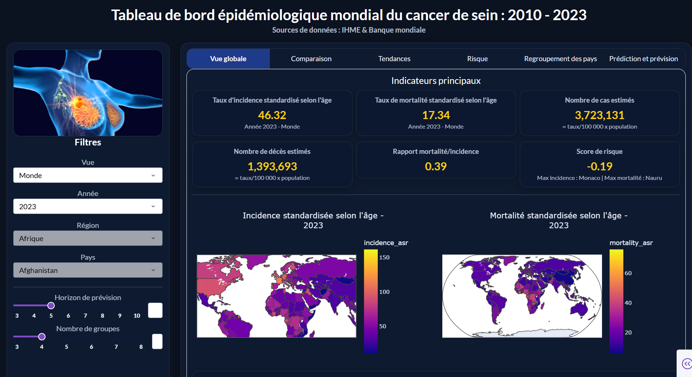

Entre expertise clinique et intelligence des données
J’exploite les données de santé pour produire des analyses robustes, des modèles utiles et des visualisations claires au service de la recherche, de la décision et de l’innovation biomédicale.
Croisement entre données cliniques, modélisation statistique et exploration interactive.
Machine LearningBiostatistiquesDashboarding
À propos de moi
🏥 Je suis actuellement étudiant en Master 1 Data Science en Santé à l’Université de Lille. Mon profil se situe à l’intersection de la santé, de l’analyse de données et des outils numériques, avec une volonté forte de mettre la science des données au service de problématiques concrètes dans le domaine biomédical.
🔬 Mon parcours s’appuie sur une première formation en imagerie médicale et radiobiologie, qui m’a permis d’acquérir une connaissance du milieu hospitalier, des pratiques cliniques et de la réalité du terrain en santé. Cette base scientifique et professionnelle m’a naturellement conduit vers une spécialisation en data science appliquée à la santé, afin de développer des compétences plus avancées en modélisation, en visualisation de données, en apprentissage automatique et en exploitation de bases de données complexes.
📊 Je m’intéresse particulièrement à l’analyse de données biomédicales, à la bioinformatique, au machine learning, à la création de dashboards interactifs et à la valorisation de données utiles à la recherche ou à l’aide à la décision. J’apprécie les projets qui combinent rigueur méthodologique, impact concret et dimension interdisciplinaire.
💡 Aujourd’hui, je souhaite continuer à développer ce profil en contribuant à des projets ambitieux dans lesquels je peux mobiliser à la fois mes connaissances du secteur de la santé et mes compétences techniques en data science. Mon objectif est de participer à la production d’outils d’analyse fiables, de modèles pertinents et de visualisations claires permettant de mieux comprendre les données et d’en tirer une réelle valeur.
Mon parcours académique
2025 – 2026
Master 1 Data Science en Santé (en cours)
Institut Lillois d’Ingénierie de la Santé (ILIS) – Université de Lille
Cette formation me permet d’articuler des compétences avancées en statistiques, informatique, sciences biomédicales et santé publique, dans une logique d’analyse, de modélisation et d’innovation appliquée aux données de santé.
Fondements quantitatifs et théoriques
AlgorithmiqueAlgèbre et analyseMesure et probabilités statistiquesStatistique paramétriqueStatistique inférentielleModélisation statistiqueOptimisationFouille de motifs
Informatique, données et outils
Systèmes d’exploitationData managementHealth Data Science ToolboxWeb scraping et web crawlingModélisation informatiqueInformatique biomédicale
Sciences du vivant et biomédecine
Biologie moléculaire et biologie systémiqueBiochimieBiologie cellulairePhysiologie et physiopathologiePharmacologiePharmacogénétique / PharmacogénomiqueGénomiqueTranscriptomiqueProtéomiqueMétabolomiqueCapteurs biomédicaux
Santé publique, recherche et professionnalisation
CommunicationAnglais professionnelFormation à la rechercheSanté publiqueÉpidémiologie
2014 – 2017
Licence Professionnelle en Génie d’Imagerie Médicale et de Radiobiologie
Cette formation pluridisciplinaire m’a apporté une base scientifique solide en anatomie, imagerie, radiologie, biologie, physique et pratique clinique, tout en me préparant aux exigences techniques et humaines du milieu hospitalier.
Sciences fondamentales
MathématiquesPhysiqueChimie généraleChimie organiqueBiochimie structuraleBiologie cellulaireMicrobiologieImmunologieBiologie moléculairePharmacologieRadiobiologie et radioprotection
Anatomie, physiologie et disciplines biomédicales
Anatomie : ostéologie, arthrologie et myologieSplanchnologieEmbryologiePhysiologie humaineAnatomie radiologique : tronc, viscères et crâneNeuroanatomieSémiologie médicaleSémiologie chirurgicaleSémiologie radiologique
Imagerie, radiologie et techniques professionnelles
AppareillageEnregistrement d’imagesTechniques instrumentalesTechniques radiologiquesTechniques radiodiagnostiquesÉchographie gynéco-obstétricaleBiophysique de l’imageriePhysique électroniqueInformatique médicale
Statistiques, informatique et communication
Initiation à l’informatiqueBiostatistiqueAnglais techniqueTechniques d’expression et méthodes de communication
Santé, éthique et environnement professionnel
Santé publiqueDéontologie médicaleLégislation du travailSoins infirmiersSport
Mes expériences professionnelles
2023 – 2025
Échographiste
Centre de Santé de Houinmè & Cabinet médical AB “Santé Life Plus” – Bénin
Réalisation des échographies gynéco-obstétricales
Responsabilité du service d’échographie
2020 – 2022
Manipulateur en radiologie médicale
Centre Hospitalier de Pneumo-Phtisiologie d’Akron – Bénin
Réalisation des radiographies
Traitement d’images radiographiques
Gestion du service de radiologie
Rédaction des rapports mensuels et annuels d’activités
2018
Stage en radiologie
CHUZ d’Abomey-Calavi / Sô-Ava – Bénin
Réalisation des radiographies
Traitement d’images radiographiques
Mes compétences
Python
R
RMarkdown
Seaborn
Microsoft Office
SQL
HTML
CSS
GitHub
pandas / numpy
scikit-learn
Plotly / Dash
Shiny / ggplot2
REDCap
Data management
Web scraping
Mes projets

Projet data santé
Analyse des tendances épidémiologiques mondiales et facteurs associés à la mortalité liée au cancer de sein
Projet combinant collecte, structuration, exploration et valorisation visuelle de données de santé à grande échelle.